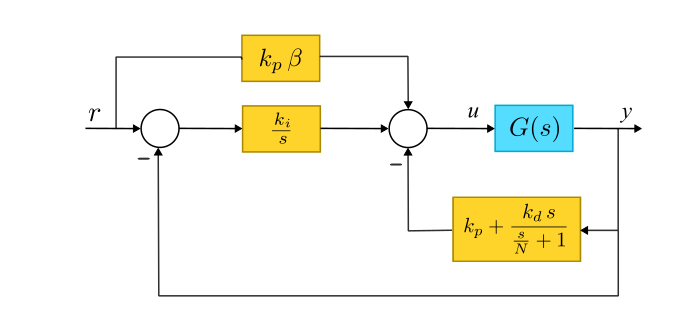

set_pid
ThermoLab.set_pid — Function
set_pid(sys::ThermalSystem; kp=10.0, ki=2.32, kd=0.0, N=10.0, beta=0.0)Configura los cinco parámetros kp, ki, kd, N y beta de un controlador PID de 2-GDL (dos grados de libertad) en la plataforma ThermoLab, como el mostrado en la siguiente figura:

La ley de control implementada es
$u = k_p\,(\beta\,r - y) + \dfrac{k_i}{s} (r-y) - \dfrac{k_d\,s}{1 + (k_d/N)\,s}\, y$
donde $r$ es la referencia [°C]; $y$ la temperatura medida [°C] y $u$ la potencia porcentual aplicada [%].
Argumentos
sys::ThermalSystem: objeto que representa la plataforma.
Argumentos de palabra clave
kp::Real=10.0: ganancia proporcional.ki::Real=2.32: ganancia integral.kd::Real=0.0: ganancia derivativa.N::Real=10.0: coeficiente del filtro del derivador.beta::Real=0.0: ponderación del punto de ajuste (setpoint weighting) en la acción proporcional.
Retorna
nothing. Imprime en consola los parámetros configurados.
Notas
Con
beta=1.0se obtiene el PID estándar de un grado de libertad (1-GDL). La acción derivativa actúa sobre la temperatura medida y no sobre el error.La estructura de 2-GDL con ponderación del punto de ajuste, el filtro del derivador y el anti-windup se describen en detalle en Åström y Hägglund (2006), Advanced PID Control.
Tras cargar el PID, la referencia se fija en 40 °C.
Referencias
- Åström, K. J. y Hägglund, T. (2006). Advanced PID Control. ISA - The Instrumentation, Systems, and Automation Society, Research Triangle Park, NC.
- Åström, K. J. y Murray, R. M. (2021). Feedback Systems: An Introduction for Scientists and Engineers, 2.ª ed. Princeton University Press.
Ejemplo
Primero, asegúrese de haber importado el paquete ThermoLab y de haber definido el sistema, así:
using ThermoLab
sys = ThermalSystem();Luego, el controlador PID se programa así:
set_pid(sys; kp=11.8, ki=2.7, kd=0.0, N=10.0, beta=0.0)